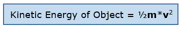
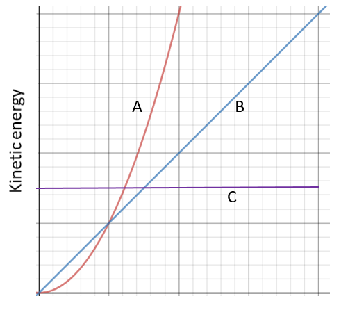
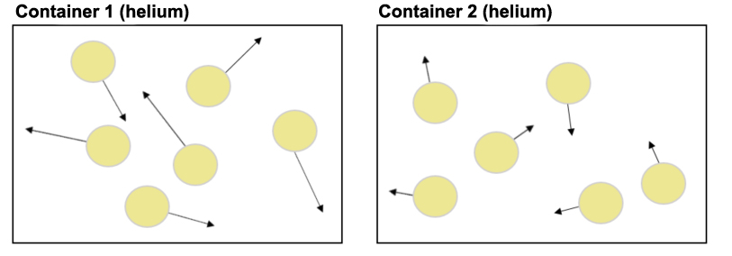
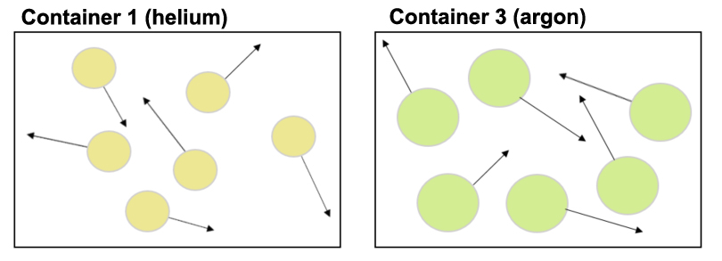

Kinetic Energy and Temperature
What is Kinetic Energy? All moving objects (including atoms and molecules) have a form of energy called kinetic energy. This is the energy that objects have that is due to their movement. Because there are different types of motion, there are different kinds of kinetic energy.
Types of kinetic energy include:- (a) translational kinetic energy
- (b) rotational kinetic energy
- (c) vibrational kinetic energy
In this section, we will talk about the translational kinetic energy of an object. This is the kinetic energy of objects due to their movement across a distance (shown below).
Translational kinetic energy is typically the type of kinetic energy people mean when they talk about "kinetic energy." The translational kinetic energy of an object's atoms/molecules is also the type of kinetic energy that defines the object's temperature. In this section, we will be talking about translational kinetic energy, but we will just call it "kinetic energy" here.
The relationship between the kinetic energy of an object and its mass (m) and speed (or velocity, v) is shown below:
- For objects moving at the same speed, more massive objects have greater kinetic energy than less massive objects.
- For objects of the same mass, faster-moving objects have greater kinetic energy than slower-moving objects.

In the graph above, the relationship between mass and kinetic energy is best represented by
In the graph above, the relationship between velocity and kinetic energy is best represented by
Definition of temperature. The temperature of an object is the average kinetic energy of the particles (atoms and/or molecules) that make up the object. The kinetic energy of individual particles is determined by both their speed and mass. So, the temperature of an object increases as the speed or mass of its atoms/molecules increases.
Let's say there are two containers of the same gas (e.g., helium atoms). As shown in the picture below (a microscopic view showing just a few of the millions of atoms in the containers), the helium atoms in Container 1 (below, left) are moving at about twice the average speed of the helium atoms in Container 2 (below, right). The length of the arrows represents the speed of the atoms: longer arrows mean higher speed. The direction of the arrows shows the direction of motion at that time point.

- Because its atoms are moving faster, we know that the temperature of the helium in Container 1 is higher than the temperature of the helium in Container 2.
Temperature increases as the mass of atoms/molecules increases. The temperature of an object also depends on the mass of the atoms and/or molecules that make up that object.
Now let's say we have a container with helium atoms and a second container with argon atoms. (Again, a microscopic view of only a few of the millions of atoms in each container are shown below.) The helium atoms in Container 1 and the argon atoms in Container 3 have the same average speed.

- An argon atom has more mass than a helium atom (see the Periodic table, which includes the "atomic mass" for each element). So, the average kinetic energy of the argon atoms in Container 3 is greater than the average kinetic energy of the helium atoms in Container 1. In other words, the gas in Container 3 has a higher temperature than the gas in Container 1.
Temperature of Object = Average Kinetic Energy (1/2mv2) of all of its molecules
This simulation below shows the motion of molecules as the temperature changes. The molecules are represented as bright blue circles below. They are magnified by a lot so we can see them in this simulation.

| Click to Run |
Phet States of Matter Simulation (click above to view)


{kind=link}